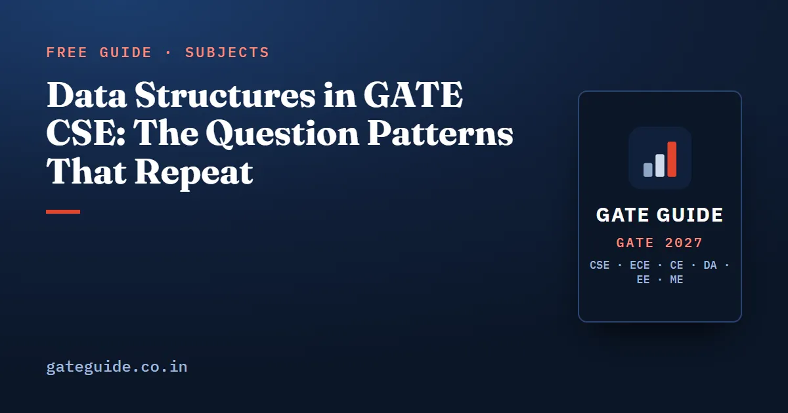

Data Structures in GATE CSE: The Question Patterns That Repeat

Data structures questions in GATE CSE change their numbers, not their shape. The same handful of templates has been reused for two decades: build a binary search tree from an insertion order, run heap operations on an array, reconstruct a tree from two traversals, count structures with a Catalan-type formula, and fill in the missing pointer statement. This guide names the patterns, gives the formulas each one runs on, and lists the traps built into the distractors.
In this guide
Key takeaways
- The syllabus names only two specific structures, binary search trees and binary heaps, and both are asked in most papers.
- A recent shift usually carries five to six Programming and Data Structures questions worth 9 to 12 marks. Analyst figures, not official ones.
- Counting questions are now numerical rather than multiple choice, so the formulas must be exact, not recognised.
- Multiple-select property questions arrived in 2021: which arrays satisfy the heap property, which operations run in constant time, which traversal pairs determine a tree.
- Every one of these patterns is solved by drawing. Nothing here needs cleverness; it needs a clean diagram and a rule applied consistently.
Where these questions sit in the paper
Programming and Data Structures has averaged roughly 9.9 marks per paper in third-party analyst compilations from 2009 to 2026, with a range of 6 to 13 and a median near 10. Sources differ by 2 to 3 marks because loop counting, hashing and graph traversal are credited to Algorithms by some analysts. The comparison across every subject is in the GATE CSE subject-wise weightage table.
| Structure | Recurring question shape | Usual format |
|---|---|---|
| Binary search trees | tree from an insertion sequence; impossible search path; deletion by successor; insertion orders giving the same tree | MCQ or NAT, 1–2 marks |
| Binary heaps | array after build, inserts or deletes; element at an index; number of swaps; which arrays are heaps | NAT or MSQ, 2 marks |
| Binary trees | reconstruct from two traversals; node, leaf and height relations; recursive function applied to a drawn tree | MCQ or NAT, 1–2 marks |
| Counting | binary trees, binary search trees, heaps, stack permutations | NAT, 1–2 marks |
| Linked lists | fill the blank in a pointer rewiring; what the routine does; which operations are constant time | MCQ or MSQ, 1–2 marks |
| Stacks and queues | infix to postfix, postfix evaluation, valid pop sequences, circular queue indices | MCQ or NAT, 1–2 marks |
| Graph representation | matrix against list costs; number of ones; non-tree edges in a traversal | MSQ or NAT, 1 mark |
Binary search trees
The base template gives eight to twelve keys and an insertion order, then asks for the height, the number of leaves, a position in the preorder, or the tree after one deletion. Inserting 5, 3, 8, 2, 4, 7, 9 into an empty tree gives a perfectly balanced tree of height 2 with four leaves and the preorder 5, 3, 2, 4, 8, 7, 9.
Three variants sit on top of it.
The impossible search path. Four sequences of visited keys are given and exactly one cannot occur. Maintain a low and high bound as you walk: going left lowers the upper bound, going right raises the lower bound, and every later key must lie strictly inside the current window.
Deletion by successor. A node with two children is replaced by the minimum of its right subtree, and that successor's right child, if any, moves up. Questions choose the predecessor in the distractors.
Counting insertion orders. The number of insertion orders producing a given tree is divided by the product, over all nodes, of the size of the subtree rooted at that node. For the seven-key tree above the product is :
Binary heaps
Heap questions are pure procedure, which is why they suit the numerical format. The array is one-based in almost every question: the parent of index is at , and the children are at and .
For a bottom-up build, heapify from index down to 1, and in each sift-down compare with the larger child. Building a max-heap from the array 3, 9, 2, 1, 8, 5 gives 9, 8, 5, 1, 3, 2 after three swaps: index 3 swaps 2 with 5, index 2 needs nothing, and index 1 sends 3 down past 9 and then past 8.
The other forms:
- A sequence of inserts followed by one or two delete-min operations, asking for the element at a given index. On a delete, the last element moves to the root and sifts down against the smaller child.
- Where the -th smallest element can sit in a min-heap. Its depth is at most , and the maximum of a min-heap is always a leaf, so it lies in the second half of the array.
- The number of distinct heaps on distinct keys. For four keys the complete shape has a left subtree of two nodes and a right subtree of one, so the count is .
- A multiple-select item asking which of four arrays satisfy the heap property. Check every parent-child pair; there is no partial credit.
Binary trees, traversals and counting
The reconstruction template gives two traversals and asks for the third. With preorder A B D E C and inorder D B E A C, the preorder's first symbol A is the root, the inorder splits into D B E on the left and C on the right, and recursing gives the postorder D E B C A. Preorder with inorder, postorder with inorder and level order with inorder each determine the tree; preorder with postorder does not, unless the tree is full.
Relations that carry the one-mark items: in a strict binary tree the number of leaves is one more than the number of internal nodes; in a strict -ary tree the leaves equal times the internal nodes plus one, ; a complete binary tree with nodes has leaves; an inorder-threaded tree with nodes has threads, because that is the number of null links.
The counting family runs on the Catalan numbers 1, 1, 2, 5, 14, 42, 132, 429: the number of unlabelled binary trees on nodes, the number of binary search trees on keys, the number of valid stack pop sequences and the number of balanced parenthesis strings are all the same count. Labelled binary trees are the Catalan number times . This is the same combinatorial machinery as the counting questions in discrete mathematics.
Stacks and queues
Infix to postfix conversion turns on two rules: exponentiation is right-associative, so an incoming exponentiation operator never pops an equal one, and for left-associative operators you pop while the stack top has greater or equal precedence. Evaluation questions use integer division, so truncation matters.
Valid pop sequences are the second form. With 1, 2, 3 pushed in order, five of the six permutations are achievable; 3, 1, 2 is not, because once 3 is popped the stack holds 2 above 1 and they can only come out in that order.
Circular queues are examined through the convention, not the concept. Fix whether the rear index holds the last element or the next free slot, then the element count is . A queue built from two stacks is asked as an operation count: each element is pushed twice and popped twice over its lifetime.
Linked lists and graph representation
Linked list questions come as a code fragment with one statement removed, or as four statements about which operations run in constant time. The answers follow from what pointers you hold: deleting the last node of a singly linked list needs its predecessor, so it costs linear time even with a tail pointer, while a circular list with only a tail pointer gives constant-time insertion at both ends.
Graph representation supplies a one-mark item. In an undirected graph the adjacency matrix holds twice as many ones as there are edges, and the diagonal of the squared matrix holds the degrees. Any depth-first search of a connected undirected graph produces exactly non-tree edges. These facts carry into Algorithms, where the same representations decide the running times.
The traps to write on your error log
- Zero-based against one-based heap indices. Read the question's convention before you touch the array.
- Height measured in edges against height measured in nodes. The paper states it; the distractors assume you did not read it.
- Choosing the inorder predecessor when the question says successor.
- Forgetting that the root must come first when counting insertion orders.
- Counting labelled trees where the question asks for unlabelled, or the reverse.
- Popping an equal-precedence exponentiation operator during infix conversion.
- Assuming a tail pointer makes every list operation constant time.
A practice routine
Work one pattern at a time until it is automatic, then mix them. A reasonable standard: a twelve-key binary search tree drawn in two minutes, a ten-key heap built in two minutes, a traversal reconstruction in ninety seconds, and every counting formula recalled without hesitation. Keep the formulas with the rest of the paper's in the GATE CSE formula sheet.
This guide gives the patterns and the formulas. The Programming and Data Structures chapter of the GATE CSE 2027 book adds the year-by-year record for each pattern, the full factor scoring behind the ranking, and a question bank of original items with worked solutions on every form above.
Frequently asked questions
Which data structures questions repeat most in GATE CSE?
Four question shapes appear in most papers. Build a binary search tree from an insertion sequence and report a structural quantity. Run heap operations on an array and report the element at an index. Reconstruct a tree from two traversals. Count structures with a Catalan or subtree-product formula. Linked list, stack and queue items rotate around these.
How many data structures questions come in GATE CSE?
Programming and Data Structures has typically supplied five to nine questions per paper, averaging about 9.9 marks in analyst compilations from 2009 to 2026. A recent shift usually carries one C output item, one recursion item, one heap item, one tree or binary search tree item and one linked list, stack or queue item. These figures are unofficial.
Are AVL trees asked in GATE CSE 2027?
The syllabus names binary search trees and binary heaps, not AVL trees. AVL questions appeared in some older papers and sporadically since, so the minimum-nodes recurrence and a basic grasp of rotations are worth an hour, but AVL should sit well below binary search trees and heaps in your plan.
Is hashing part of the data structures syllabus for GATE CSE?
Hashing is listed under Algorithms in the official syllabus, not under Programming and Data Structures, but it is implemented with arrays and chained lists. The recurring question forms are the final slot and probe count under linear or double probing, and expected chain length, which is a probability question in disguise.
How should I practise data structures for GATE?
Practise with paper, not with a compiler. Draw the array after every heap operation, draw the tree after every insertion, and draw three nodes before any pointer rewiring. Then time yourself against a target of a ten-key heap build in two minutes and a twelve-key binary search tree in two minutes.
Sources
- GATE 2027 official website (IIT Madras)
- GATE 2027 CS syllabus (official PDF)
- GATE 2027 question paper pattern (official)
- GeeksforGeeks subject-wise weightage for GATE CS
- GATE Overflow previous year questions
Dates, fees and the syllabus are set by the GATE 2027 organising institute and can change. Always confirm at gate2027.iitm.ac.in.